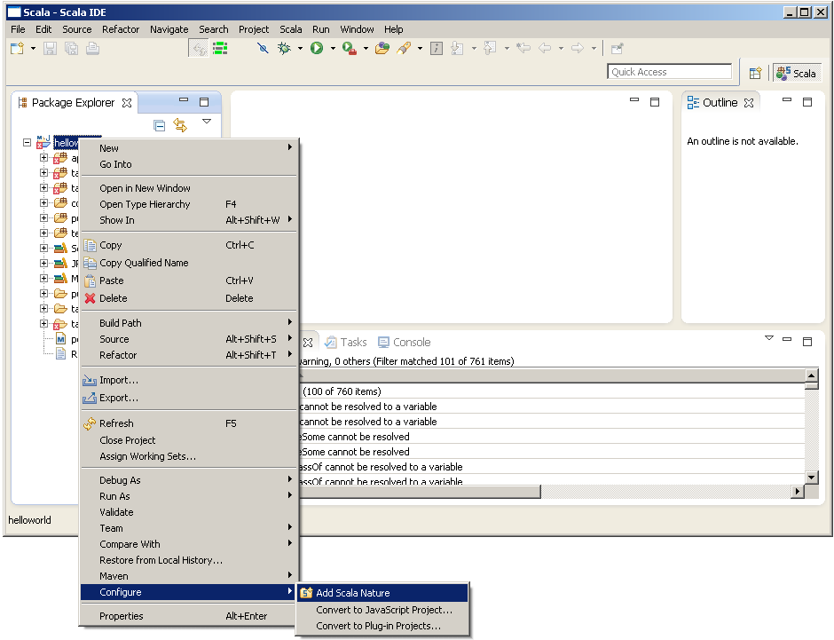
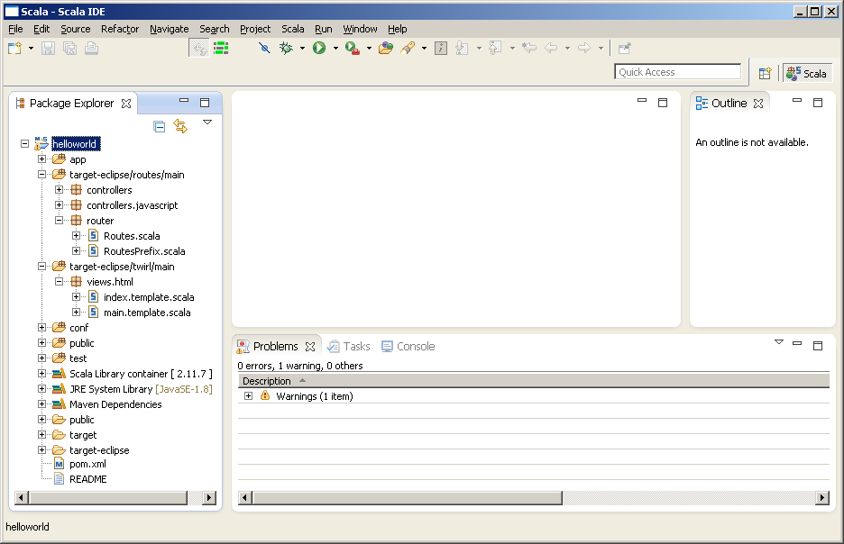

Eclipse IDE integration
Use Scala IDE bundle or add Scala IDE plugin to your existing Eclipse installation.
Scala IDE is Eclipse bundle with Scala and Maven support out of the box.
1. Preparation
Play! Framework project must be a Scala project (must have Scala nature) in Eclipse. For Eclipse project to be Scala project it has to be Java project first.
M2Eclipse (Eclipse plugin for Maven integration) analyzes Maven project and treats it as a Java project only if it has maven-compiler-plugin with default-compile and default-testCompile executions in it’s build.
This condition is met for jar, war, ejb and some other packagings, but not for play2 because play2 projects use sbt-compiler-maven-plugin instead of maven-compiler-plugin.
In order to make M2Eclipse properly import and configure play2 project, fake maven-compiler-plugin plugin configuration has to be added. It should be done in separate profile, used only inside Eclipse.
There is one more problem with Eclipse integration. Using the same classes location (target/classes) by Eclipse and Maven (or SBT) from command line at the same time leads to problems. Scala IDE uses .cache-main file for storing incremental compilation informations. Maven uses target/cache/compile file. Using different control files by different Scala compilers for the same source and target locations simultaniously or alternately causes problems. The solution is to define different output directory for Eclipse.
Additionally, source and target compilation parameters in maven-compiler-plugin are used to set source and generated .class files compatibility levels in Java Compiler page of project properties.
Necessary pom.xml code snipped with eclipse profile is presented below:
<profiles>
<profile>
<id>eclipse</id>
<build>
<directory>${project.basedir}/target-eclipse</directory>
<plugins>
<plugin>
<groupId>org.apache.maven.plugins</groupId>
<artifactId>maven-compiler-plugin</artifactId>
<configuration>
<skipMain>true</skipMain>
<skip>true</skip>
<source>1.6</source> <!-- 1.8 for Play! 2.5+ -->
<target>1.6</target> <!-- 1.8 for Play! 2.5+ -->
</configuration>
<executions>
<execution>
<id>default-compile</id>
<goals><goal>compile</goal></goals>
</execution>
<execution>
<id>default-testCompile</id>
<goals><goal>testCompile</goal></goals>
</execution>
</executions>
</plugin>
</plugins>
</build>
</profile>
</profiles>
This profile is intended to be used exclusively by Eclipse. Don’t use it when building with Maven from command line.
2. Import the project as Maven project.

Click Next button.

Click Finish button.
When import process finishes, the project looks like on the image below.
As you can see, there are many compilation errors. The project is treated as any other Java project. Eclipse Java Compiler (JDT) cannot compile Scala code and fails with huge amount of compilation errors.
3. Add Scala nature
Now Java project has to be converted into a Scala project. This is accomplished by adding Scala Nature to it.

After adding Scala Nature, Eclipse recompiles the project.

There are no errors in the project anymore.
On the above picture you can see routes and templates files generated by the plugin in target-eclipse/routes/main and target-eclipse/twirl/main directories.